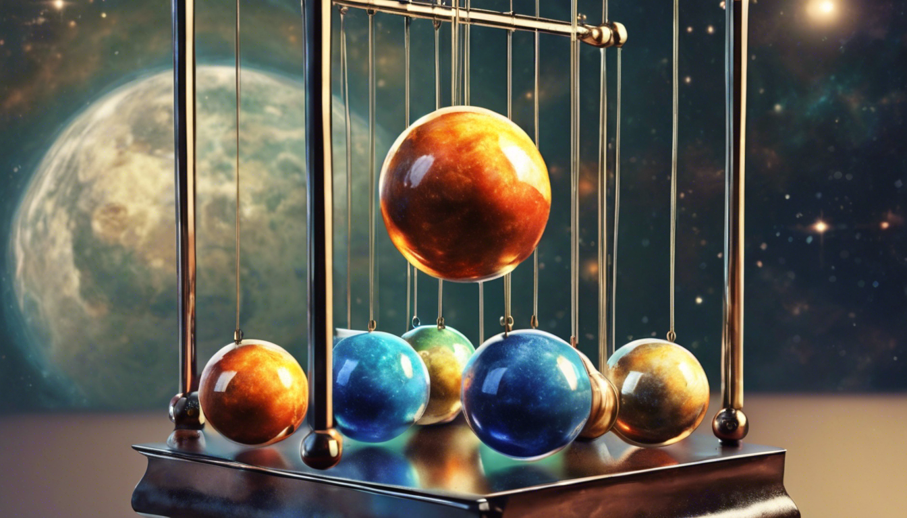

**Project Proposal**
Student Name: Tao Zhang
Student Number: 23-955-511
# Motivational Image - Newton's Cradle

_By Stable Diffusion, with prompt:
"A 4-balls Newton's Cradle with the four balls (with different materials) being earth,
moon, sun and jupyter. The background is the galaxy. In painting style."_
## Description & Why it relates to the theme
The scene I want to render is mainly a Newton's Cradle, but with a unique twist!
In this version, the conventional iron balls have been replaced by celestial bodies - an Earth, a Moon,
and various other intriguing spherical objects that defy the conventional expectations of a Newton's Cradle.
The background sets the stage with a radiant galaxy, casting a shimmering light to this cosmic display.
At first glance, it may appear to be just another Newton's Cradle,
perhaps more fancy than the average one. However, **the more you look**, a celestial revelation unfolds.
The seemingly ordinary balls reveal themselves as celestial bodies, harmonizing with the galaxy background.
More importantly, **the more you think**, one recognizes that the entire grandeur of the universe's physics
mechanism is encapsulated within this cradle. The Newton's Cradle, designed to illustrate the principles of
_Conservation of Momentum_ and _Conservation of Energy_, is a microcosm of the theory of everything,
connecting the fundamental rules governing the small balls to the unfathomable universe.
## How the selected features will help
**Depth of Field:** this camera effect will give a more realistic feel to the viewer, which also helps to
emphasize the main focus of the scene - the Newton's Cradle or maybe the most fancy ball.
**Images as Textures:** this feature is very important because it allows me to give the balls the textures.
For example, the Earth ball can be given a texture of the Earth, and the Moon ball can be given a texture of the Moon.
**Bump Mapping:** this feature helps me to give the balls the bump maps, because for example, the Moon ball
surface is not smooth, but rather has many craters. Then I can create more realistic shadows on the Moon ball
based on the mapped normals.
**Textured Area Emitters:** this feature can allow me to have an emissive earth. We are tired of being
lighted by the sun, so let's try to be lighted by the earth!
**Denoising:** Intel's Open Image Denoise Intergration can help me to reduce the noise in the rendered image.
**Modeling Meshes:** Newton's Cradle is a delicate and non-trivial object, instead of wasting time on finding its
model online, I can just model it by myself using Blender.
**Environment Map Emitter:** this feature can allow me to have the shimmering galaxy background.
**Disney BSDF:** this feature can not only help me to have the realistic material effects,
but also make the balls more interesting. For example, the Earth ball can be given a subsurface effect,
while the Moon can be made metallic.
# Selected Features
## Student #1 (and only 1)
Student Name: Tao Zhang
nethz: zhangta
ID | Short Name |Points | Features (if required) & Comments
--------|---------------------------|-------|----------------------------------
5.1 | Advanced Camera Effects | 5 | Depth of Field
5.3 | Images as Textures | 5 |
5.7 | Intel's Open Image Denoise integration | 5 |
5.8 | Bump Mapping | 5 |
5.11 | Textured Area Emitters | 5 |
5.20 | Modeling Meshes | 5 |
15.3 | Environment Map Emitter | 15 |
15.5 | Disney BSDF | 15 | Subsurface, Roughness, Metallic, Specular, Clearcoat
Total | | 60 |
## Validation Plan
To validate my rendering, I will conduct comparisons between the outcomes generated by Nori
and those produced by alternative rendering engines such as Mitsuba or PBRT.
Additionally, for the Disney BRDF, I can compare my results with the those presented
in the original paper.
# Supplementary
* This report template uses [Markdeep](https://casual-effects.com/markdeep/), which supports Markdown syntax in HTML file. For example usage, please refer to the [official demo document](https://casual-effects.com/markdeep/features.md.html).
* LaTeX is also supported for typing mathematical formulas:
$$
L_o(\mathbf{x}, \omega_o) = \int_{\Omega} L_i(\mathbf{x},\omega_i)\, f(\mathbf{x}, \omega_i, \omega_o)\, |\cos\theta_i|\, \mathrm{d}\omega_i
$$